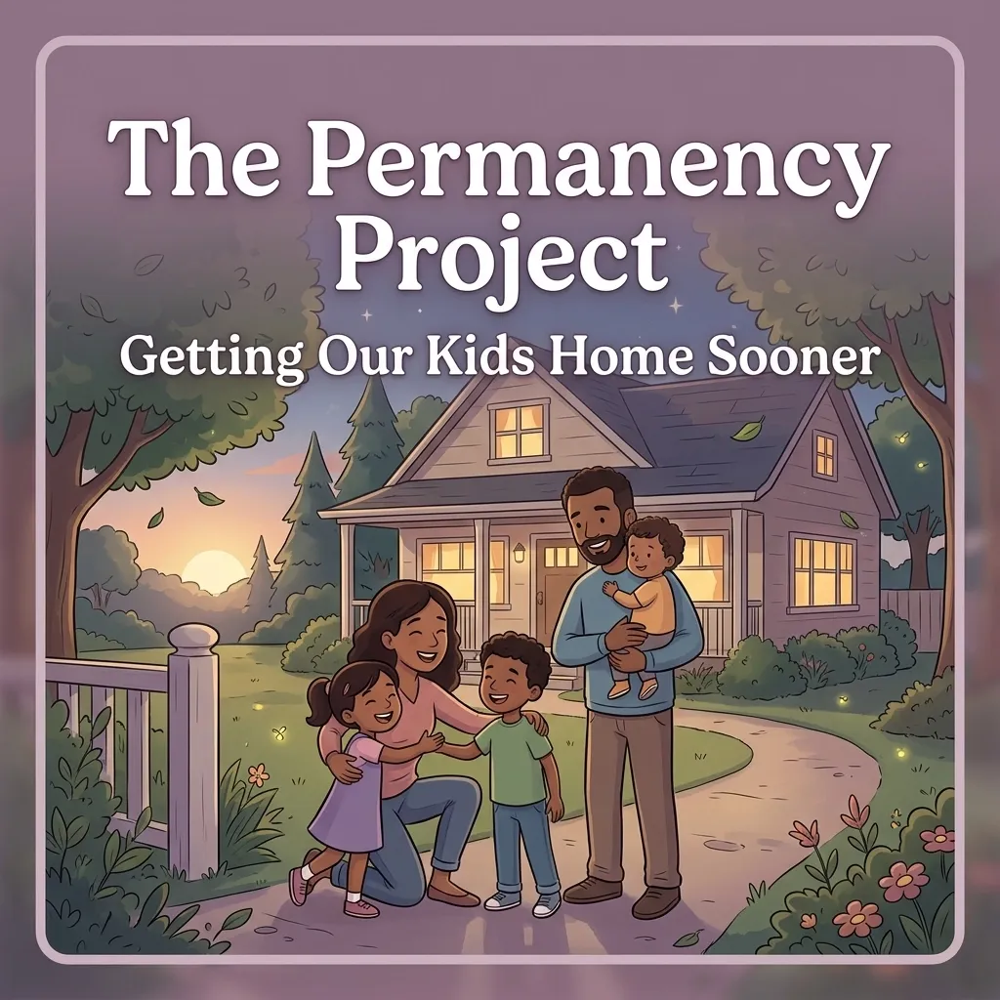

The Permanency Project: Getting Our Kids Home Sooner

At Chris Doran Law LLC, we believe that family is the heart of our community. Whether you live in North Vernon, Vernon, Commiskey, Hayden, or Scipio, you know that our children are our future. But sometimes, families go through hard times. When those hard times lead to court cases, children can get stuck in the system for a long time.
Chris Doran saw this firsthand while serving as a magistrate in Jennings County. He saw that the longer a child stayed in the system, the harder it was for everyone involved. During that time, he helped establish the Jennings County Permanency Project, created to address a major problem: helping children in Jennings County spend as little time as possible in foster care or other out-of-home placements.
What is a CHINS Case?
To understand the Permanency Project, we first need to talk about CHINS. This stands for "Children in Need of Services."
In simple terms, a CHINS case happens when a child's physical or mental condition is seriously impaired or endangered. This usually happens because a parent or guardian cannot: or will not: provide the care, support, or supervision the child needs.
When a child is involved in a CHINS case, the court steps in. The goal is always to make sure the child is safe. Often, this means the child might have to live somewhere else for a while, like with a relative or in a foster home. This is called "out-of-home placement."
While these placements keep kids safe, they are meant to be temporary. The ultimate goal is "permanency." Permanency means the child has a safe, stable, and forever home to live in: ideally back with their parents once things are healthy again.
Why Time Matters for Our Kids
Every day a child spends away from home is a big deal. For a child, a month feels like a year. Staying in a "temporary" spot for too long can cause stress and make it hard for kids to do well in school or make friends.
Chris Doran realized that the court process was sometimes moving too slowly. There were barriers or hurdles that kept cases from moving forward. When a case drags on, the child stays in limbo. They don't know where they will be living next month or next year.
While serving as a magistrate, Chris wanted to change that, recognizing that practical, timely solutions mattered as much as following procedure.
How the Permanency Project Works
The Permanency Project isn't just a set of rules; it is a monthly meeting of minds. Chris organized a group of "stakeholders" to meet regularly. These are the people who have a hand in these cases, including:
The Department of Child Services (DCS)
Attorneys for the parents
Public defenders
CASA (Court Appointed Special Advocates) volunteers
Service providers and therapists
When these people are in different offices, communication can be slow. But when they all sit in one room once a month, things happen fast.
Identifying Barriers to Permanency. In these meetings, the group looks at cases and asks: "What is stopping this child from going home or finding a forever home?" Sometimes the barrier is a lack of transportation for a parent to get to a class. Sometimes it is a long waitlist for a specific type of therapy. By identifying these barriers early, the group can brainstorm ways to fix them. Instead of waiting for the next official court hearing six months away, they tackle the problem now.
Developing Strategies. Once a barrier is found, the group creates a strategy. For example, if a parent needs a specific type of drug treatment that isn't available in North Vernon, the group works together to find a resource nearby or a way to get them there. This proactive approach cuts out weeks or months of "wait time" for the child.
Bringing in the Experts. The Permanency Project also focused on education. During his time as a magistrate, Chris invited guest speakers to these monthly meetings to help everyone stay informed. Experts came in from different treatment facilities. They talked about what resources were available for families dealing with addiction or mental health issues. Knowing exactly what a facility offered helped the court make better-informed decisions for the family.
The group also had important, and sometimes difficult, conversations about safety. For example, the deputy coroner came to speak with the group. They discussed the leading causes of death for juveniles in Jennings County. This was important information. If people understood the biggest risks, they could help parents create safer homes. Whether it was safe sleep habits for babies or preventing drug tragedies, this knowledge helped protect children.
The Success of the Project
The results of the Permanency Project have been a huge win for Jennings County.
Kids Return Home Sooner. By moving cases faster, children spend less time in the foster care system. They get back to their families or move into permanent adoptive homes much more quickly.
Saving Taxpayer Money. It costs a lot of money to keep children in the foster care system. By reducing the time children spend in out-of-home placements, the county and state save significant amounts of money. This is money that can then be used for other important community needs.
Stronger Families. When parents get the help they need faster, they are more likely to succeed. The project focuses on getting the right resources to the right people at the right time.
How We Can Help You
Legal issues involving children and families are some of the most stressful experiences a person can face. Whether you are dealing with a CHINS case, a custody hearing, or other family law matters, you need someone who listens to what you have to say and gives you clear options.
At Chris Doran Law LLC, we don't use big legal words to confuse you. We give it to you straight. We wear many hats: sometimes we are negotiators, sometimes we are fighters in the courtroom, but we are always your advocate.
If you live in North Vernon, Vernon, or the surrounding areas and need help with a legal matter, don't wait to reach out.
We are proud to serve the people of Jennings County. We offer transparent pricing and even discuss things like travel fees upfront so there are no surprises.
Contact Us Today
If you need a lawyer who understands the local community and is committed to helping families, reach out to us. We handle a wide variety of complex legal matters, and we are ready to listen to your story.
Let's work together to find the best path forward for you and your family.